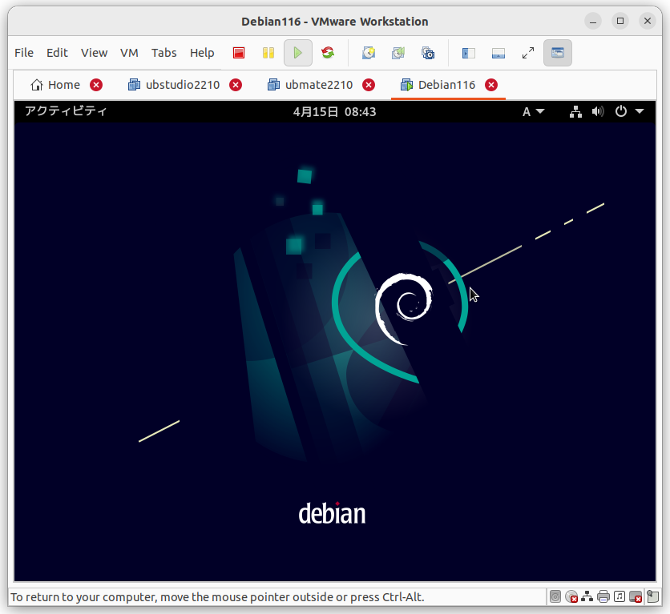
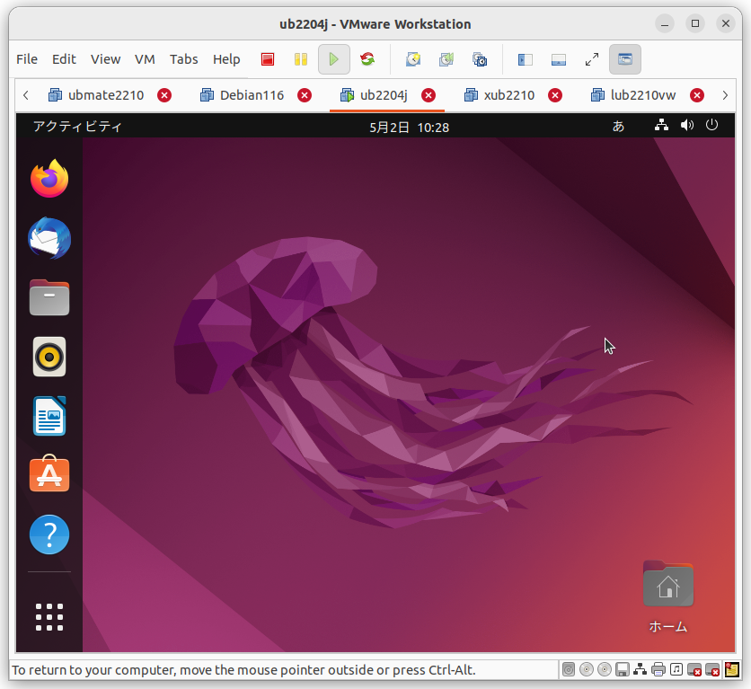
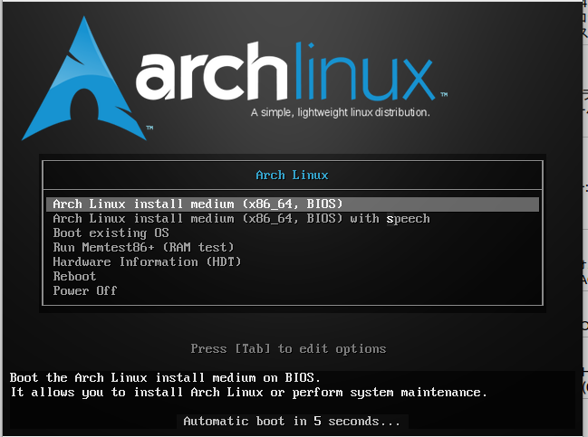
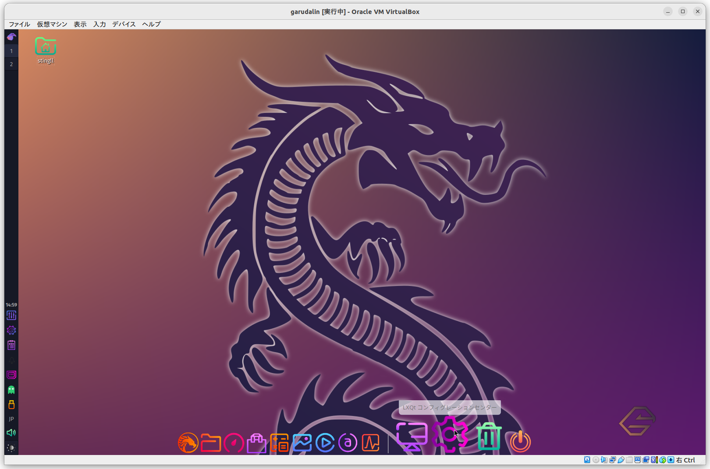
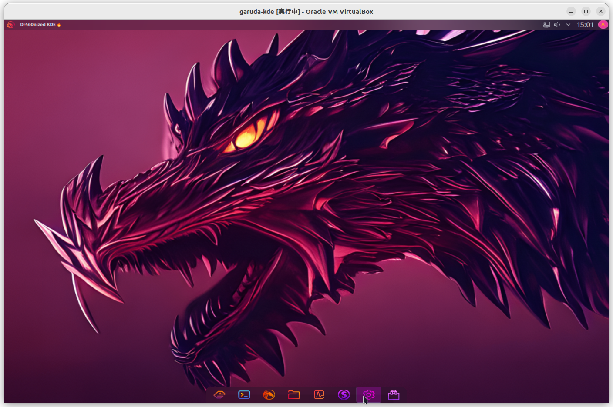
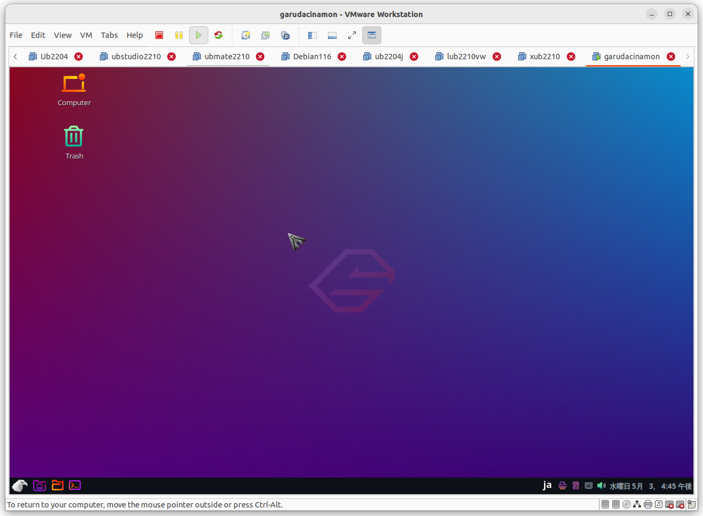

第1章 パソコン(PC)へLinux OSインストールする手順
1.1 Linux導入対象のPCメーカーでインストール方法の確認と選択
ブートメディアを確認する
BIOSで選択できるブートメディを確認する(BIOSの確認)
BIOSとは、PCが起動する一番はじめのもの。PCの電源を入れた直後に、BIOSセットアップを呼び出すキーを押すことで可能。
DVD・CD-ROM、HDDやUSBから起動できるか、BIOS（BasicInputOutputSystem)を確認。パソコンの取扱説明書を見るか、ベンダのサポートWebサイトを参照するか等ありますが、古くなったPCの取扱説明書はないと想定しています。
BIOSセットアップを呼び出すキーは限られているので以下に記す代表的なキーで試します。
BIOS設定画面に入るための代表的なキー：
[F1]、[F2]、[F8]、[F10]、[F12]、[Delete]、[Tab]
- PCメーカー別
- マザーボード別（PCのCPUやメモリが搭載されたボード)
の情報も提示します。（PCメーカのシール等が見えなくなったり、古くてわからないときはお手上げですが）
表1.1: PCメーカー別 の BIOS 起動キー
| PCメーカー名 | BIOS起動キー |
|---|---|
| Panasonic | 「F2」キー |
| 日立 | 「F2」キー |
| NEC | 「F2」キー |
| 東芝 | 「F2」キー か 「F12」キー |
| 富士通 | 「F2」キー か 「F12」キー |
| Sharp | 「F2」キー |
| SONY・VAIO | 「F2」キー |
| Lenovo（IBM） | 「F1」キー か 「F12」キー |
| HP（Compaq） | 「F10」キー |
| Dell | 「F2」キー か 「F12」キー か 「Ctrl+Alt+Enter」キー |
| Acer | 「F2」キー |
| ASUS | 「F2」キー か 「F8」キー |
デスクトップPCでケースを開けて確認できる場合は以下情報です。ノートPCの場合、メーカーにより内部の確認が難しい場合があります。ノートPCの機種などから、Web検索して情報を参照してください。
表1.2: マザーボード(MB)メーカー別 の BIOS 起動キー
| MBメーカー名 | BIOS起動キー |
|---|---|
| ASUS | 「Del」キー か 「TAB」キーを押すとPOSTで停止、提示されたキーでBIOS画面 |
| Giga-byte | 「Del」キー |
| Intel | 「F2」キー |
| ESC | 「Del」キー |
| ASROCK | 「F2」キー |
| MSI | 「Del」キー |
これらのキーを1つずつ試し、BIOSセットアップ画面となることを確認します。(以下、BIOSの代表的な会社であるAMIとPhoenix の セットアップ画面）
注意要なのは、上記キーを押すタイミング。上記キー入力のタイミングは
パソコンによってはかなり厳しく、正しいキーを押している場合にも、
BIOSセットアップを呼び出せないことがある。
(注意）パソコンの電源を入れてディスプレイに何か表示されたらすぐに、
上記の代表的なキー思われるなかの1つを、1秒間に1～3回程度の頻度で連打する。
あまり連打すると、BIOSがキーボードのテストに失敗してキーボード・エラーを
起こすことがあるので注意。
パソコンの機種により、[Esc]キーを押しながらPCの電源を入れなければならない場合もあります。 Windows 10やWindows 11などを搭載するタブレット型PCの場合は、音量調整ボタン「＋」か「－」(型番や機種によって異なる)のいずれかと電源ボタンを同時押しでBIOSを起動するものもあります。
Windows上の「高速スタートアップ」が有効になっている場合、電源OFF状態からのコールドブートではこれらのキー押下でBIOSに入る事は出来ません。Windows が「UEFI形式でインストール」され、かつ「マザーボードのFast Bootが有効になっている状態」でも、これらのキー押下でBIOSに入る事は出来ません。UEFI Windows PCで F2 キーや DEL キーで BIOS画面に入るには、以下の手順が必要です。Windows 10でF2キーやDELキーでUEFI (BIOS) 画面を起動する手順※リンク先手順の概要▲クリックで拡大まず一度 Windows を起動して「高速スタートアップ」を無効化し、さらに上図の画面を経由してUEFI画面に入り、そこでFast Bootを無効化しておく必要があります。
AMI BIOS 画面例
図1.1: AMI BIOS画面
図1.2: AMI BIOS画面
図1.3: AMI BIOS画面
Phoenix Award BIOS 画面例
図1.4: AMI BIOS画面
図1.5: AMI BIOS画面
図1.6: AMI BIOS画面
図1.7: AMI BIOS画面
IBM ThinkPad BIOS 画面例Intel Visual BIOS 画面例( https://www.4900.co.jp/smarticle/7785/ )
各社PCシリーズのBIOS切替キー一覧
以下のようにまとめようと考えましたが、情報収集やまとめに時間がかかるので挫折しています。まとめられるようになったらまとめます。
- 導入対象パソコン
- <製造会社>
- <機種名>
- <型番>
- <製造年月日>
- <BIOS種類> わかったら AMI , Phoenix, IntelVisual, Thinkpad, その他から選択
- <BIOS切替キー>
- <BIOS切替条件等>
PCメーカー名とシリーズで現状まとめました。すいません。
表1.3: PCメーカーとシリーズ(ノートPC)
| PCメーカー名 | シリーズ名(ノートPC) | BIOS切替キー |
|---|---|---|
| Panasonic | Let'sNote、TOUGHBOOK（タフブック） | ー |
| Sharp | Mebius | ー |
| 日立 | Flora | ー |
| NEC | Lavie | ー |
| 東芝 | Dynabook | ー |
| 富士通 | FMV LIFEBOOK、FMV LOOX、arrows Tab(アローズタブ)、Chromebook(クロームブック) | ー |
| SONY・VAIO | VAIO | ー |
| Lenovo（IBM） | ThinkPad | ー |
| HP（Compaq） | Pavilion、Elite(エリート)、ProBook(プロブック)、EliteBook(エリートブック)、ENVY、Victus(ビクタス)、OMEN、Spectre(スペクトル)、Chromebook(クロームブック) | ー |
| Dell | Vostro、Inspiron(インスパイロン)、Alienware、Dell G、Latitude、Precision、XPS | ー |
| Acer | Aspire、Swift、Nitro、Chromebook(クロームブック)、Predator(プレデター)、Vero(ヴェロ) | ー |
| ASUS | ROG、VivoBook(ビボブック)、Zenbook(ゼンブック)、TUF Gaming、Chrombook、ExpertBook(エキスパートブック) | ー |
1.2 Linuxディストリビューションの選択
以下のディストリビューションがあるようです。
- DebianとUbuntu(インストール対象のソフトウェア管理コマンドがdpkg,apt） 以下提示
- Redhat（管理コマンドがyum）とCentOS（現在サービス終了）、Alma Linux（RHEL互換） いずれ提示予定
- Arch派生のgaruda（管理コマンドがpacman）に画面の見た目がエキゾチックでカッコ良く、他のディトリビューションと違っているので提示
選択観点としては人により様々でしょうが、以下の項目で分類します。
１．インストール後のデフォルト画面とメニューの見た目で選択
２．インストールしようとしているPCのディスク容量による選択
３．インストールしようとしているPCの持つハードウェアスペックによる選択
※初期インストール難易度は、ディストリビューションをインストール時の、キーボード設定・ファイルシステム設定・日本語による設定画面があるかどうかで、ない場合は、＋１加算して難易度を表示する。 「０」が一番簡単ということ。※導入後難易度は、日本語入力・画面日本語表示・システム設定画面の日本語表示・システム設定画面起動しやすさの有無でない場合、＋１加算する。
以下のディストリビューション発展経緯を参照して、大元のディストリビューションから派生したものを１つの表(テーブル)として表記します。
https://upload.wikimedia.org/wikipedia/commons/1/1b/Linux_Distribution_Timeline.svg
Ubuntuの以下のサイトで、重複したURLがある場合の大元の正規URLとしてCDイメージを提供し、コミュニティからのサポートを受けることができるようです。
http://ftp.yz.yamagata-u.ac.jp/pub/linux/ubuntu/releases/
- Kubuntu
- Lubuntu
- Mythbuntu
- Ubuntu Budgie
- Ubuntu GNOME
- UbuntuKylin
- Ubuntu MATE
- UbuntuStudio
- Xubuntu
- UbuntuCinnamon
- Ubuntu Unity
- Edubuntu
元となったディストリビューション Debian
表1.4: インストール時見た目と日本語表示・入力
| 比較項目/ディストリビューション名 | Debian 11.01 | Ubuntu 22.04LTS |
|---|---|---|
| 初期画面 |
 キャプション(hrefをいれてもよい）
|
 キャプション(hrefをいれてもよい）
|
| 最低限必要なHDD容量 | 20GiB | 20GiB |
| 最低限必要なメインメモリサイズ | 2GiB | 2.5GiB |
| 初期インストール難易度 | 0 | 0 |
| 初期インストール情報（画面遷移） | 付録A | 0 |
| 初期（日本語による）インストール時の日本語表示 | 可 | 可 |
| 初期インストール時のキーボード設定 | 1 | 1 |
| 初期日本語入力可否 | 可 | 可 |
| 日本語入力設定情報 | ー | ー |
| スクロールタッチパッド認識 | ー | ー |
| 導入後難易度 | 1 | 1 |
| パッケージ管理コマンド | dpkg,apt | 右同じ |
| 備考１：機器の無線LANが故障した場合のUSB代替えについて | ー | ー |
| 備考２：機器のBluetoothが故障した場合のUSB代替えについて | ー | ー |
表1.5: インストール時見た目と日本語表示・入力
| 比較項目/ディストリビューション名 | lubuntu 22.10 | kbuntu 22.10 | |
|---|---|---|---|
| 初期画面 |
|
| |
| 最低限必要なHDD容量 | 20GiB | 20GiB | |
| 最低限必要なメインメモリサイズ | 2GiB | 2GiB | |
| 初期インストール難易度 | 0 | 0 | |
| 初期インストール情報（画面遷移） | 0 | 0 | |
| 初期（日本語による）インストール時の日本語表示 | 可 | 可 | |
| 初期インストール時のキーボード設定 | 1 | 1 | |
| 初期日本語入力可否 | 可 | 可 | |
| 日本語入力設定情報 | ー | ー | |
| スクロールタッチパッド認識 | ー | ー | |
| 導入後難易度 | 1 | 1 | |
| パッケージ管理コマンド | dpkg,apt | 右同じ | 右同じ |
| 備考１：機器の無線LANが故障した場合のUSB代替えについて | tp-link(TL-WN725N) | ー | |
| 備考２：機器のBluetoothが故障した場合のUSB代替えについて | ー | ー |
![[lub2210-def-g0]](images/lub2210-def-g0.png)
![[kub2210-g0]](images/kub2210-g0.png)
表1.6: インストール時見た目と日本語表示・入力
| 比較項目/ディストリビューション名 | xubuntu 22.10 | ubuntuStudio 22.10 |
|---|---|---|
| 初期画面 |
|
|
| 最低限必要なHDD容量 | 20GiB | 20Gib |
| 最低限必要なメインメモリサイズ | 2GiB | 2GiB |
| 初期インストール難易度 | 0 | 0 |
| 初期インストール情報（画面遷移） | 0 | 0 |
| 初期（日本語による）インストール時の日本語表示 | 可 | 可 |
| 初期インストール時のキーボード設定 | 1 | 1 |
| 初期日本語入力可否 | 可 | 可 |
| 日本語入力設定情報 | ー | ー |
| スクロールタッチパッド認識 | ー | ー |
| 導入後難易度 | 1 | 1 |
| パッケージ管理コマンド | dpkg,apt | 右同じ |
| 備考１：機器の無線LANが故障した場合のUSB代替えについて | ー | ー |
| 備考２：機器のBluetoothが故障した場合のUSB代替えについて | ー | ー |
![[xub2210-g0]](images/xub2210-g0.png)
![[ubstudio2210-g0]](images/ubstudio2210-g0.png)
元となったディストリビューション RedHat Linux
表1.7: インストール時見た目と日本語表示・入力
| 比較項目/ディストリビューション名 | RedHat | CentOS | AlmaLinux |
|---|---|---|---|
| m(_ _)m 準備中 m(_ _)m |
元となったディストリビューション Arch Linux
表1.8: インストール時見た目と日本語表示・入力
| 比較項目/ディストリビューション名 | Arch | garuda-kde |
|---|---|---|
| 初期画面 |  |  |
| 最低限必要なHDD容量 | 20GiB | 29.9GiB |
| 必要なメモリサイズ | 2GB | 2.5GiB |
| 初期インストール難易度 | 8 | 1 |
| 初期インストール情報（画面遷移） | 0 | 0 |
| 初期（日本語による）インストール時の日本語表示 | 可 | 可 |
| 初期インストール時のキーボード設定 | 1 | 1 |
| 初期日本語入力可否 | 不可 | 不可 |
| 日本語入力設定情報 | - | pacman -S fcitx5-im ５個のPkgのインストール、 /etc/enviroment の編集 |
| スクロールタッチパッド認識 | ||
| 導入後難易度 | ||
| パッケージ管理コマンド | ||
| 備考１： | ||
| 備考２： |
表1.9: インストール時見た目と日本語表示・入力
| 比較項目/ディストリビューション名 | garuda-lxqt | garuda-cinamon |
|---|---|---|
| 初期画面 |
 キャプション(hrefをいれてもよい）
|
 |
| 最低限必要なHDD容量 | 29.9GiB | 29.9GiB |
| 必要なメモリサイズ | 2.5GiB | 2.5GiB |
| 初期インストール難易度 | 1 | 1 |
| 初期インストール情報（画面遷移） | 0 | 付録B |
| 初期インストール情報（画面遷移） | 0 | 0 |
| 初期（日本語による）インストール時の日本語表示 | 可 | 可 |
| 初期インストール時のキーボード設定 | 1 | 1 |
| 初期日本語入力可否 | 不可 | 可(日本語表示され設定すれば日本語変換可能） |
| 日本語入力設定情報 | インストール、 /etc/enviroment の編集 | 同左 |
| スクロールタッチパッド認識 | ||
| 導入後難易度 | ||
| パッケージ管理コマンド | ||
| 備考１： | ||
| 備考２： |
1.3 インストールメディアの選択
基本的にWindowsのサポートが切れる方を対象と想定します。
サポートが切れる前に決断して、前述のLinuxのディストリビューションを選択したでしょうか。 画像系を編集操作をしたい方は、ubuntustudio を選択するなどあります。 Webブラウザの利用が主のかたは、どのディストリビューションでどの種類のWebブラウザを インストール可能なので、あとは自分が好きな、画面環境で選択しそうと考えています。 （Webブラウザ例：FireFox,Chrome,Vivaldi,Opera,Sleipnir,・・・・ )
ディストリビューションを選択して、ISOイメージをダウンロードしたら
Rufusをダウンロードして、ブータブルメディアであるUSBメモリを作成してインストールですね。 自分が持っているPCのメモリ容量とハードディスク容量さえわかれば、それに合うディストリビューションを 選んでインストールです。
ASUS T100TA （タブレットでも利用できるもの）は、USBだとBIOSによっては設定を切替えても 起動しないので、 DVD・CD-ROMを利用して起動するとうまくLinuxがインストールできる製品も あるかもしれません。 USB 接続の読込・書込可能な、光学機器（CD・DVD・BD ドライブ）を用意したほうが楽かもしれません。
USBメモリは、容量8GiB以上のものを準備します。現在のISOファイルがDVD対応となっているので 4.7GiBサイズになっているものがあるからです。 BDのは25GiBとなりますがここまでの容量のUSB はまだないと思います。
Rufus は以下のサイトで公開しているようです。 https://rufus.ie/ja
「流布ｓ、流布ｓ Linux」というこの資料の題目を考えた後、「流布s」をローマ字で綴ると Rufusとなるので、上記Rufusも皆に使ってもらおうという意識で名前を考えたのではと 思った次第です。考え違いや的外れであればすいません。
付録として、 各ディストリビューションのインストール画面遷移を提示しています。 入力がある部分で、何を入力すれば良いかを多少コメントしています。 これで、Linuxが利用できるようになり、サポート切れがないようにアップデートを行えば 数年は、ずっと使い続けられます。
PCマシンを長く使い続けること、自分が使い易くなるようにカスタマイズをしなくても使い続けれます。